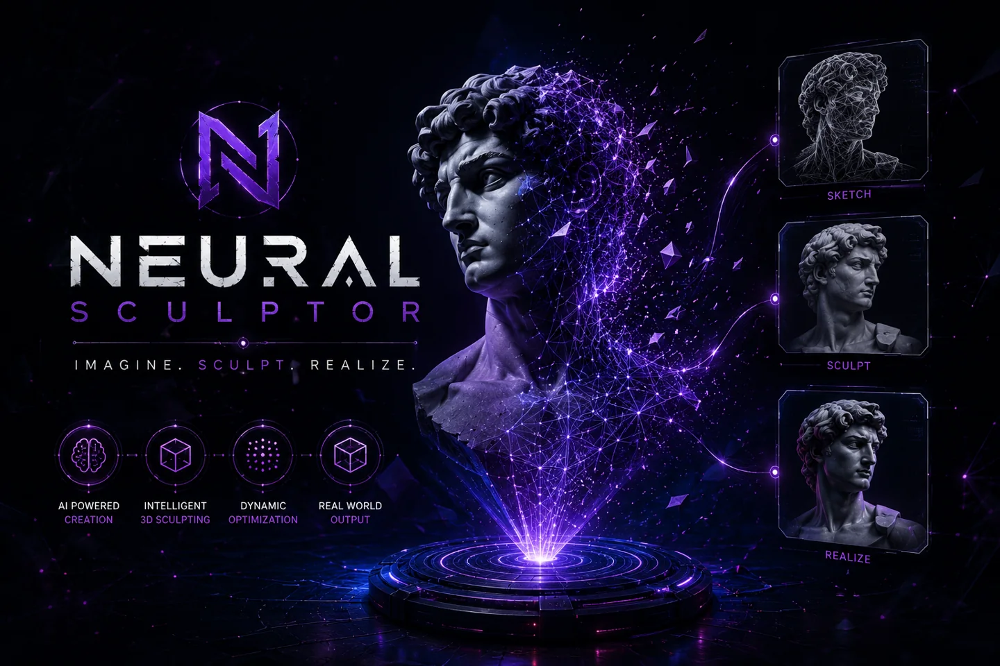
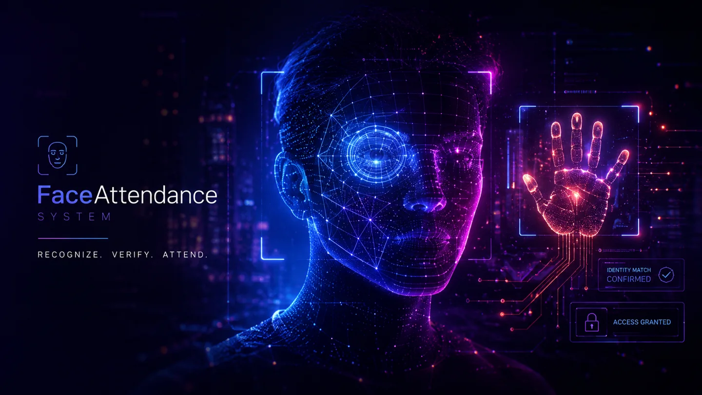
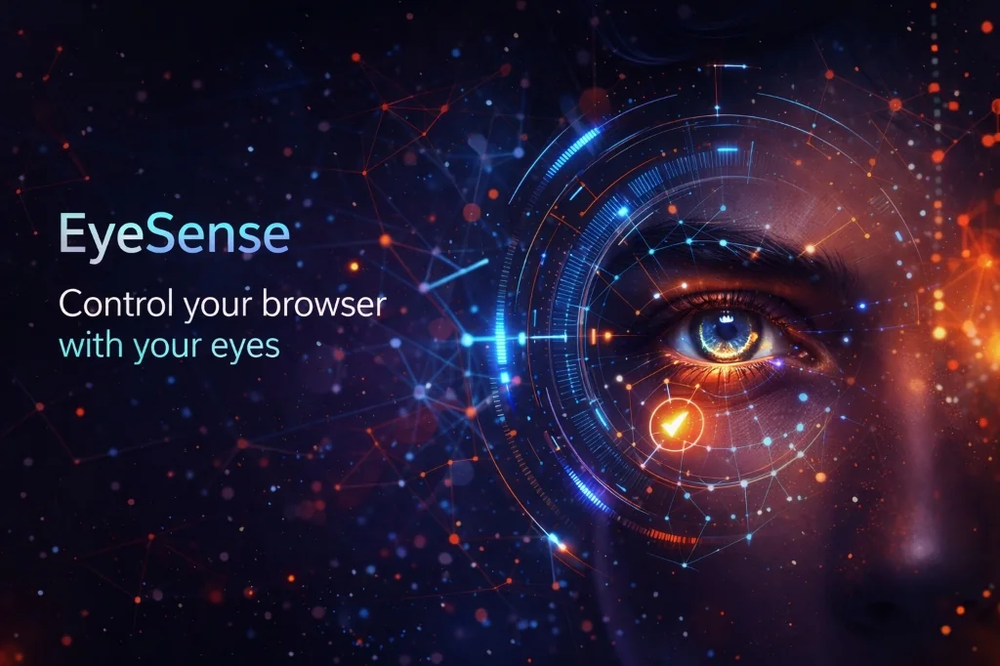
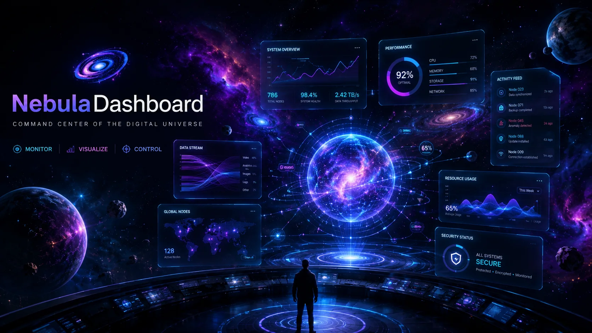

01COMPUTER VISION ↗
Neural-Sculptor
Live 3D facial scanning in the browser, turning facial landmarks into an exportable model with audio synthesis.
I’m a Computer Science student specializing in AI and Machine Learning at Brainware University. I like taking an idea from a first sketch to something people can actually use.
My interests move between frontend craft, applied AI, and Android. Lately, I’ve been learning more about backend systems with Node.js and building an AI-powered portfolio generator.
A little more on LinkedInA few explorations in computer vision, AI, and useful little tools.

01Live 3D facial scanning in the browser, turning facial landmarks into an exportable model with audio synthesis.

02An AI-based attendance system with face recognition, real-time tracking, and an interactive dashboard.
A customizable floating chat-head reminder that helps make daily GitHub commits a habit.

04A Chrome extension for hands-free clicking through real-time webcam-based eye-blink tracking.

05A cinematic new-tab experience that turns your browser history into an interactive 3D galaxy.
The stack shifts with the problem. These are a few things I’ve been learning and building with.
Real-time activity metrics, language mastery distribution, and GitHub contribution graph.
GitHub Activity Log
I’m open to collaborations, open-source contributions, and freelance projects.
arpanbiswas647@gmail.com